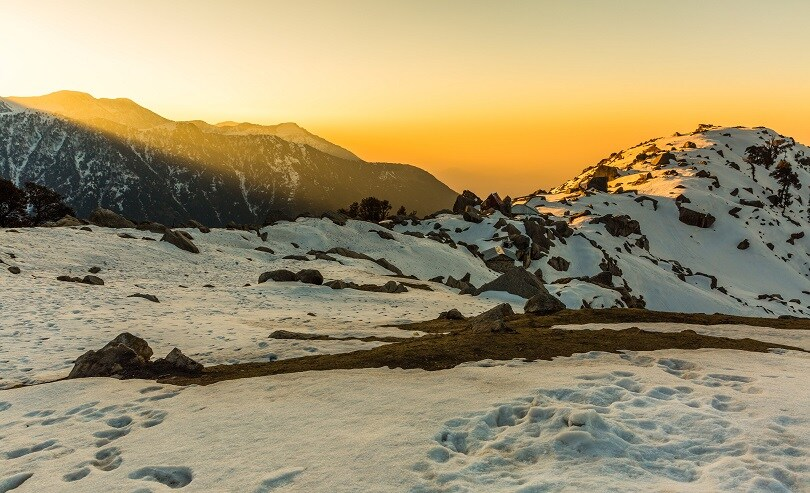

Camping in Dhauladhar
Dauladhar is quite a peaceful and enchanting place that is located on the main outer Himalayan peak. You can enjoy the view of the Kangra valley, which looks extremely beautiful and mesmerizes the onlookers. During peak season, tourists can enjoy the view of the flowers that fills the whole valley. Also there are beautiful temples, tea estates, and other things that are worth seeing here.
The place of Dhauladhar has spectacular views that make it the most favorite destination spots amongst the tourists. The vertical landslide makes it quite interesting and beautiful. This place is quite popular amongst the trekkers and adventure lovers. You can view large numbers of Gaddi shepherds that usually flock here.
Some of the interesting places that are worth visiting here are Chintpuri, Kangra, Chamba, Dharmshala, Joginder Nagar, Palampur, Dalhousie, and many others.
Dharamsala, the headquarters of Kangra district, lies on its southern spur in above the Kangra Valley, which divides it from Chamba.
So, how would be the idea of a forest camping in Himachal Pradesh? Sounds great, isn’t it? Book a trip to Dhauladhar Range and enjoy the amazing camping with fun and adventure. Plan your trip right away.
Dharamshala
Dharamshala is a small town that is located in Kangra district in Himachal Pradesh. It was earlier known as Bhagsu. It is the official headquarters of Dalai Lama, named as Central Tibetan Administration. It is also the residence of the great monk. The place can be reached from Delhi through flight. From Dharamsala you can start trekking for different places like Laka kareri.
Dalhousie
This town has been named after the famous Lord Dalhousie who was once the British Governor general of India. It is located on the western side of Himachal Pradesh, and is known for its natural beauty. This place can be reached through roadways from Delhi.
Khajjiar
This place is known as the “Switzerland of India”. It is located in Himachal Pradesh, and is known for the dense forest and deodar climb slopes. The closest destinations are Dalhousie, which is like 23 kilometers from this place.
Kangra
Kangra is a small town that located in Himachal Pradesh. The town was formed by few Rajput Kings, and it still holds it legend. This place is well known for the magnificent temples and other places. Don’t miss to visit the temple of Devi Vajreshwari.